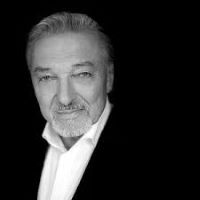

O Nás
Festival v Miami je jedním z nejživějších a nejbarevnějších událostí v USA. Každoročně přitahuje tisíce návštěvníků z celého světa, kteří přicházejí oslavit hudbu, kulturu a umění. Ulice města ožívají hudebními vystoupeními od nejznámějších umělců až po talentované místní hudebníky. Kromě hudby si mohou účastníci užít různé gastronomické zážitky, které reflektují bohatou kulinářskou scénu Floridy. Festival také zahrnuje umělecké instalace, workshopy a interaktivní akce, které propojují komunitu. Místní umělci mají příležitost předvést svá díla a inspirovat ostatní. Po celou dobu trvání festivalu panuje přátelská atmosféra, která oslavuje rozmanitost a kreativitu. Miami se tak stává místem setkání a sdílení zážitků pro všechny, kdo se chtějí bavit a užít si nezapomenutelné chvíle.
Zpěváci
Taylor Swift

Taylor Alison Swift (* 13. prosince 1989 West Reading, Pensylvánie) je americká zpěvačka, textařka, skladatelka, multiinstrumentalistka, režisérka a herečka. Je jednou z nejúspěšnějších zpěvaček počátku 21. století, v roce 2023 se stala autorkou s historicky nejvíce alby na prvním místě v hitparádách časopisu Billboard. Její úspěch tkví dle novinářů a fanoušků v několika zásadních ohledech, a to schopnosti psát texty písní s emocionálními příběhy, se kterými se posluchači mohou identifikovat, udržováním více osobního vztahu se svými fanoušky, a také tomu, že její hudba pokrývá více žánrů od country, popu a indie, a zasahuje tak široké spektrum posluchačů.
Karel Gott
Karel Gott (14. července 1939 Plzeň – 1. října 2019 Praha-Smíchov) byl český šlágrový zpěvák, herec a malíř. V letech 1965–2019 se prodaly desítky milionů nosičů hudebních alb s jeho nahrávkami, což z něj učinilo nejúspěšnějšího českého interpreta. Během kariéry vydal celkem 293 sólových alb na domácí scéně i v zahraničí. Zpíval nejen česky, ale i německy, latinsky, anglicky, slovensky, maďarsky, italsky či rusky.
Náš tým
Jsme tři přátelé, kteří se rozhodli spojit své dovednosti, aby vytvořili festival, na který se nezapomíná. Každý z nás má svoji jasnou roli, díky které všechno funguje:
Vedoucí celého projektu. Má na starosti, aby všechny části festivalu skvěle fungovaly a do sebe zapadaly. Jeho preciznost a schopnost plánování jsou klíčem k úspěchu celého podniku. Neustále dohlíží na to, aby vše šlo podle plánu a každý detail byl promyšlený.
Ryan Gosling
Ředitel festivalu
Kreativec, který dává festivalu jeho jedinečnou podobu. Od grafiky přes program až po atmosféru – všechno jde přes jeho šikovné ruce a nápady. S nadšením vymýšlí nové způsoby, jak překvapit návštěvníky a udělat z festivalu výjimečný zážitek.
Dana White
Kreativní manažer
Produkční a organizátor logistiky. Jeho energie a schopnost řešit problémy jsou k nezaplacení. Zajišťuje, aby všechny technické a organizační záležitosti běžely hladce. Díky jeho schopnosti jednat s partnery a dodavateli se na festivalu nic nezadrhne.